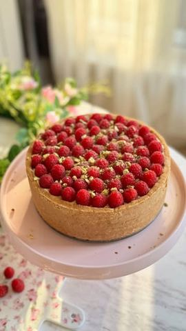

Malina vanila tortica

Moja beleška
SačuvanoPredivna, lagana, prava letnja osvežavajuća tortica 🌸 Vanila fil, mekana podloga od keksa, malina sos i sveže maline, ljubitelji kremastog i osvežavajućeg, obožavaćete ovu kombinaciju 💓
Sastojci
- Podloga
- Malina sos
- Vanila fil
Priprema
+dodatno sveže maline po površini torte Prvo pripremamo vanila fil. Mutimo žumanca sa šećerom i aromom vanile. Kada potpuno posvetle i kada se šećer otopi, dodajemo gustin i nekih 200 ml mleka, umutimo, pa dodamo u šerpicu sa ugrejanim ostatkom mleka. Na tihoj vatri mešamo dok se smesa fino ne zgusne (kao puding) Potom dodamo puter, sjedinimo, pa prekrijemo providnom folijom i ostavimo da se ohladi. Kada se ohladi dodajemo 200 gr umućene slatke pavlake, pa je to najbolje sjediniti lagano spatulom ili najsporijoj brzinom mikserom. Zatim maline skuvamo sa malo limunovog soka i šećerima, pa nakon 10ak minuta sklonimo sa ringle i dodamo 2 ravne kašike gustina umešane sa 2 kašike vode. Umešamo i ostavimo da se prohladi. Podlogu pripremamo tako što umešamo mleveni keks sa otopljenim puterom, mlekom pa toj smesi dodamo nekih 100 gr umućene slatke pavlake kako bi smesa bila mekana i kompaktna da možemo da oblozimo ivice i dno kalupa od 20cm. Na to premazemo prvo malina sos, potom vanila fil i po površini redjamo sveže maline. Ostavimo preko noći u kalupu u frižideru da se potpuno ohladi i stegne. Vrelim tankim nožem potom okružite oko kalupa kako bi se lakše skinuo obruč. Vanila fil ostaje kremast i mekan u kombinaciji sa malinama pun pogodak 👌🏼 Uživajte 🌸
Originalni opis sa Instagrama
Malina vanila tortica 🌸 Predivna, lagana, prava letnja osvežavajuća tortica 🌸 Vanila fil, mekana podloga od keksa, malina sos i sveže maline, ljubitelji kremastog i osvežavajućeg, obožavaćete ovu kombinaciju 💓 Podloga: •400 gr mlevenog keksa •100 gr otopljenog putera •150 ml mleka •100 gr umućene slatke pavlake Malina sos: •200 gr malina (mogu i zaledjene) •60 gr šećera •kašika soka od limuna •2 kašike gustina Vanila fil: •5 žumanaca •120 gr šećera •kašika arome vanile •500 ml mleka •60 gr gustina •60 gr putera •200 gr slatke pavlake +dodatno sveže maline po površini torte Prvo pripremamo vanila fil. Mutimo žumanca sa šećerom i aromom vanile. Kada potpuno posvetle i kada se šećer otopi, dodajemo gustin i nekih 200 ml mleka, umutimo, pa dodamo u šerpicu sa ugrejanim ostatkom mleka. Na tihoj vatri mešamo dok se smesa fino ne zgusne (kao puding) Potom dodamo puter, sjedinimo, pa prekrijemo providnom folijom i ostavimo da se ohladi. Kada se ohladi dodajemo 200 gr umućene slatke pavlake, pa je to najbolje sjediniti lagano spatulom ili najsporijoj brzinom mikserom. Zatim maline skuvamo sa malo limunovog soka i šećerima, pa nakon 10ak minuta sklonimo sa ringle i dodamo 2 ravne kašike gustina umešane sa 2 kašike vode. Umešamo i ostavimo da se prohladi. Podlogu pripremamo tako što umešamo mleveni keks sa otopljenim puterom, mlekom pa toj smesi dodamo nekih 100 gr umućene slatke pavlake kako bi smesa bila mekana i kompaktna da možemo da oblozimo ivice i dno kalupa od 20cm. Na to premazemo prvo malina sos, potom vanila fil i po površini redjamo sveže maline. Ostavimo preko noći u kalupu u frižideru da se potpuno ohladi i stegne. Vrelim tankim nožem potom okružite oko kalupa kako bi se lakše skinuo obruč. Vanila fil ostaje kremast i mekan u kombinaciji sa malinama pun pogodak 👌🏼 Uživajte 🌸 • • • #torta #tortica #ukusnetorte #idejazadezert #malina #vanila #ukusno #brzoilako #ukusnahrana